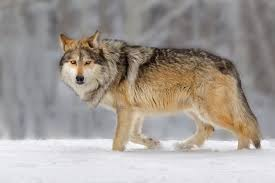

- Scientific Name: Canis lupus
- Habitat: Found in forests, mountains, and tundras
- Nickname: "The Pack Hunter"
- Social Behavior: Lives in packs with strong hierarchy
- Speed: Can run up to 60 km/h
- Communication: Uses howling to communicate over long distances
- Lifespan: 6-8 years in the wild, up to 16 years in captivity
- Diet: Carnivorous, mainly hunts deer and small mammals
GO BACK TO HOME